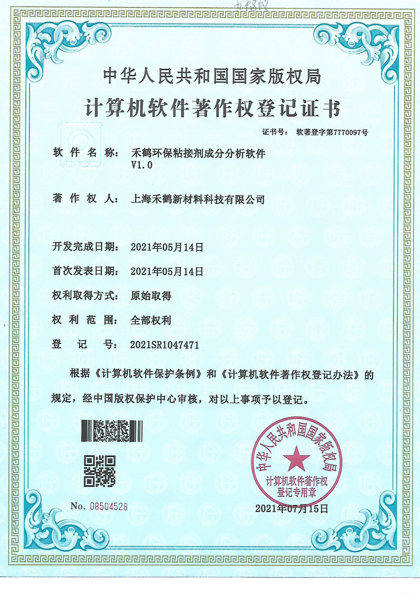

<div style="max-width: 1000px; margin: 40px auto; text-align: center;">
  <h2 style="font-size: 26px; color: #004080;">检测报告汇总</h2>
  <p style="font-size: 18px; margin-bottom: 30px;">以下为我们材料与结构测试的部分官方报告截图</p>

  <!-- T系列主报告 -->
  <div style="margin-bottom: 40px;">
    <br>
    <br>
    
  </div>

  <!-- 7-18号报告 3列展示 -->
  <div style="display: flex; flex-wrap: wrap; justify-content: center; gap: 20px;">
    
    
    

    
    
    

    
    
    

    
    
    
  </div>
</div>
